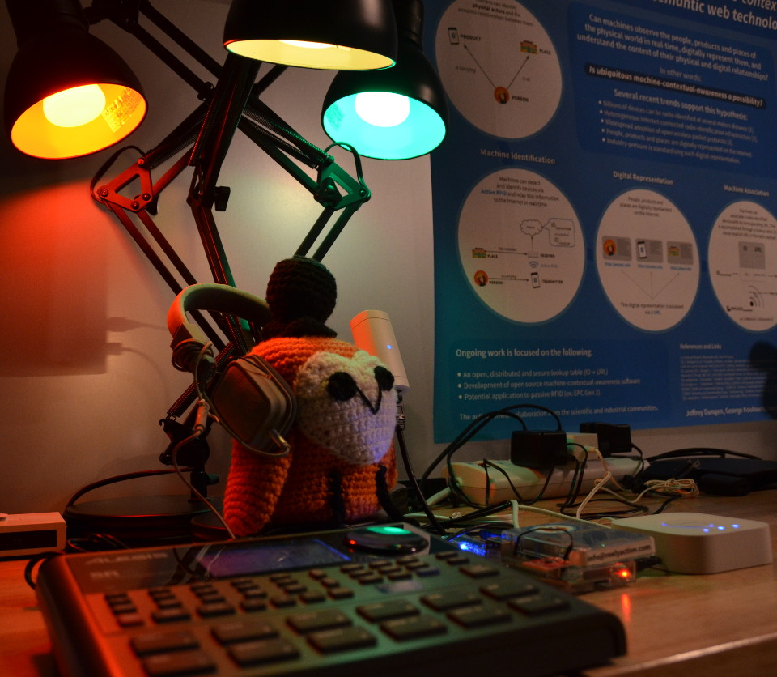
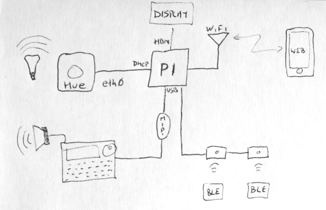
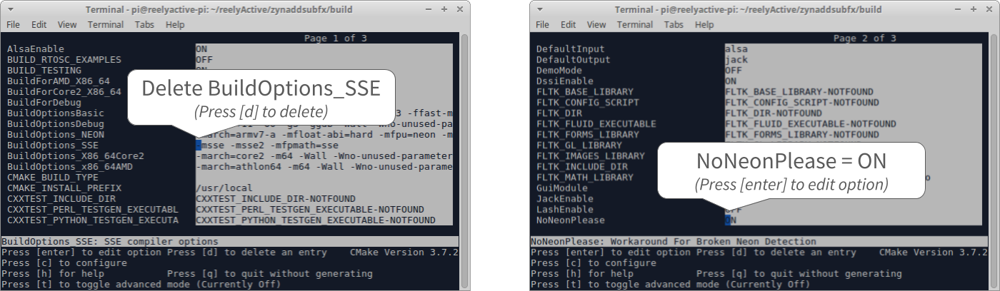

In this tutorial we'll take you step-by-step through building a standalone generative art platform from a virgin Pi 3. This project was initiated to celebrate IoT Day on April 9th, 2017, at which time it looked like this.
You'll need a Raspberry Pi 3, a Philips Hue kit with bridge and lightbulbs, and a reelyActive minimal starter kit. The following (placeholder) drawing illustrates how the pieces connect together.
Follow our Make a Pi Hub tutorial up to and including the Install Node.js and forever step.
In order to directly connect the Philips Hue bridge to the Pi and provide it an IP address, the Pi must be configured as a DHCP server on eth0. From the command line, run the following:
sudo apt-get install dnsmasq
sudo mv /etc/dnsmasq.conf /etc/dnsmasq.default
This will install the dnsmasq software which we'll configure by editing the dnsmasq.conf file by running sudo nano /etc/dnsmasq.conf from the command line. Paste in the following lines and save:
interface=eth0
dhcp-range=10.0.50.2,10.0.50.99,255.255.255.0,12h
This will configure the Ethernet interface to serve IP addresses in the range from 10.0.50.2-99 using DHCP, with a 12-hour lease. Restart the service from the command line for changes to take effect:
sudo service dnsmasq restart
The midi package depends on ALSA. Install the prerequisite by running the following from the command line:
sudo apt-get install libasound2-dev
The generable package for Node.js bundles all the code for the generative art platform. From the command line, run the following:
mkdir ~/reelyActive/generable
cd ~/reelyActive/generable
npm install generable
It may take a minute or two to install and build the software. Once this is complete, from the command line run nano generable.js to create a file called generable.js, then paste in the following contents and save:
var generable = require('generable');
var server = new generable( { httpPort: 3000 } );
Run the generable.js file you created by entering node ~/reelyActive/generable/generable.js from the command line. Then point the Pi's browser to localhost:3000, or, if your PC is on the same WiFi network as the Pi, point your favourite browser to port xxx.xxx.xxx.xxx:3000 where the Xs represent the Pi's IP address.
From the GeneraBLE webpage, follow the link to Hue (/hue) which will scan for a Philips Hue bridge connected to the Pi's Ethernet interface. When a bridge appears in the list, first press the button on the Hue bridge, then click the Connect button in the webpage. GeneraBLE will store the bridge credentials and automatically reconnect each time it is run. Only if the bridge's IP address changes will you need to repeat this step.
From the GeneraBLE webpage, follow the link to MIDI (/midi) which will scan for connected MIDI interfaces. From the list, select the desired MIDI interface: you should find ZynAddSubFX here if it is running (see below). GeneraBLE will store this interface and automatically reconnect each time it is run. Only if the connected MIDI interfaces change will you need to repeat this step.
If a reelyActive starter kit is connected and receiving BLE packets, you should observe generative behaviour on the lights and MIDI interface. If not, try restarting generable.js. Have fun!
In this optional step, we'll install ZynAddSubFX which is "a fully featured open source software synthesizer capable of making a countless number of instruments". By directing the GeneraBLE MIDI output to ZynAddSubFX, the Raspberry Pi becomes a powerful sound machine over its (somewhat crappy) 3.5mm audio jack. Many, many thanks to Joshua Curry (lucidbeaming) for his detailed tutorial which gave us the courage to even attempt this step!
First, install all the required packages using the handy script provided by lucidbeaming. From the command line, run the following:
cd ~/reelyActive/generable
git clone https://raw.githubusercontent.com/lucidbeaming/pi-synths/master/ZynAddSubFX/required-packages.sh
sudo chmod 755 required-packages.sh
./required-packages.sh
Next, download and configure ZynAddSubFX by running the following from the command line:
cd ~/reelyActive
git clone https://github.com/zynaddsubfx/zynaddsubfx.git
cd zynaddsubfx
mkdir build
cd build
cmake ..
ccmake .
In the CMake options, delete BuildOptions_SSE and change NoNeonPlease to ON, as illustrated below.
And finally install ZynAddSubFX. From the command line, run the following:
sudo make install
The installation may take tens of minutes. During this time you can open another terminal and complete the other configuration steps below — just check back that the installation is complete before any reboot!
Add the default user (pi) to the audio group by running the following from the command line:
sudo usermod -a -G audio pi
Next assign augmented resources (real-time priority and memory) to the audio group. From the command line run sudo nano /etc/security/limits.d/audio.conf to create/edit a file called audio.conf, then paste in the following contents and save:
@audio - rtprio 80
@audio - memlock unlimited
To provide the CPU-hungry ZynAddSubFX optimal resources, configure all four CPUs to operate in "performance" mode. From the command line run sudo nano /etc/rc.local to edit the rc.local file which runs on startup, then paste in the following contents and save:
echo "performance" > /sys/devices/system/cpu/cpu0/cpufreq/scaling_governor
echo "performance" > /sys/devices/system/cpu/cpu1/cpufreq/scaling_governor
echo "performance" > /sys/devices/system/cpu/cpu2/cpufreq/scaling_governor
echo "performance" > /sys/devices/system/cpu/cpu3/cpufreq/scaling_governor
Finally, downgrade the virtual memory to limit swap activity. From the command line, run the following:
sudo /sbin/sysctl -w vm.swappiness=10
Once ZynAddSubFX is successfully installed (check first!) it can be started from the command line by running the following:
zynaddsubfx -U -A=0 -o 512 -r 96000 -b 512 -I alsa -O alsa -P 7777 -L "/usr/local/share/zynaddsubfx/banks/Noises/0065-Short noise.xiz" &
The oscillator size (-o), sample rate (-r) and buffer size (-b) options are all per lucidream's recommendations. The instrument (-L), Short noise, is selected to work well out-of-the-box with GeneraBLE.
To run ZynAddSubFX on boot, from the command line run sudo nano /etc/rc.local to again edit the rc.local file, this time pasting the above command.
We'll be improving this tutorial to make getting set up even easier. We'll also improve and document the generator.js file which defines the behaviour of the platform (and was hastily prepared on IoTDay!).
Our starter kits include a one-month trial of our Pareto platform which is the easiest way to put your data to good use. Also, if you expand on this platform and would like to share your work, please get in touch!